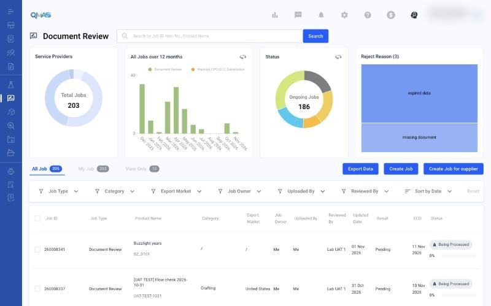
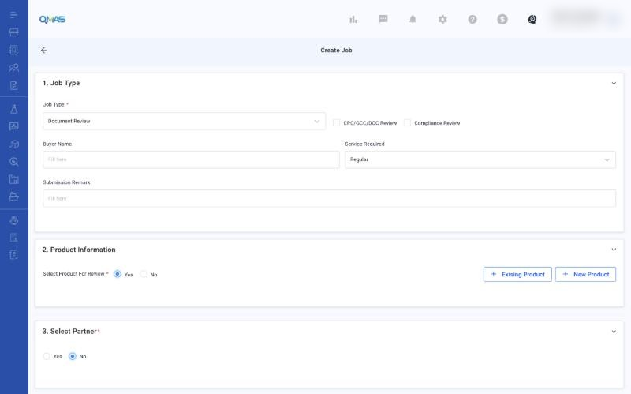
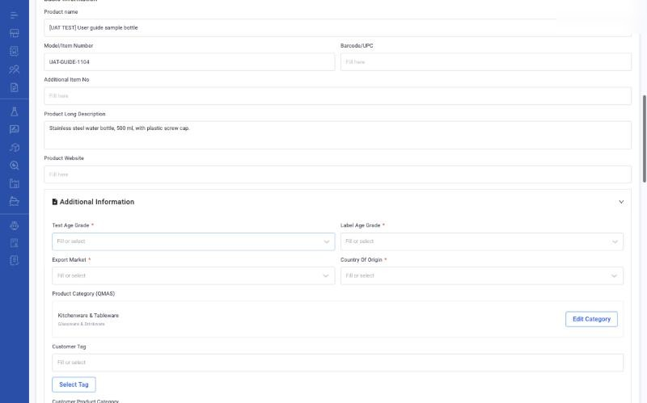
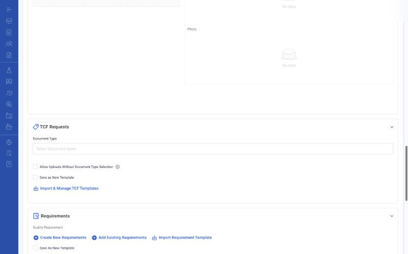
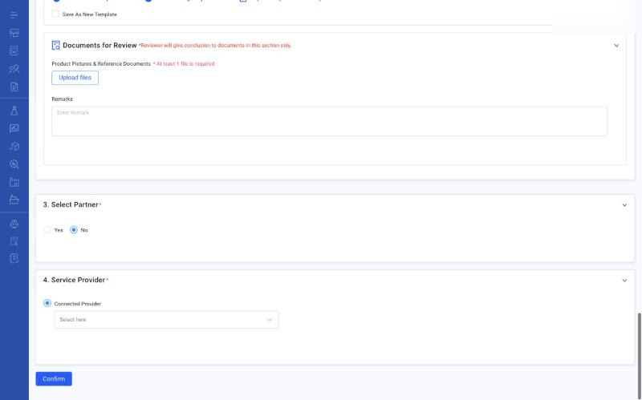
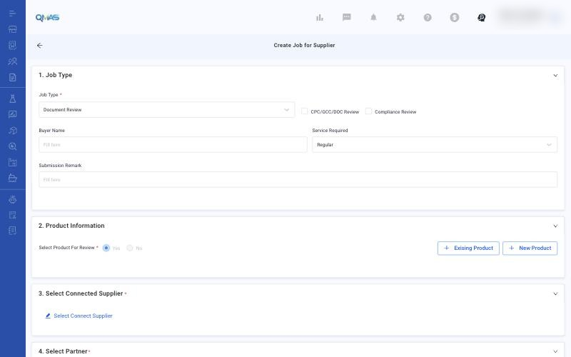
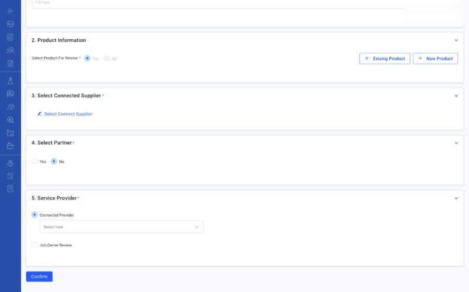

Document Review — Create a Review Job
Get compliance documents (CPC, GCC, DoC, test reports, TCF) reviewed by a lab or by yourself, whether you upload them or your supplier does.
Overview
- Choose the flow that fits (table below).
- Fill in Job Type, Product Information and the documents to review.
- For a supplier job, choose the connected supplier who will upload.
- Choose a partner (optional) and the Service Provider: a connected lab, or Job Owner Review to review yourself.
- Click Confirm. Follow the status on the Document Review list until the review is concluded.
Step-by-step
1. Choose your flow
| Flow | Button | Who uploads | Who reviews |
|---|---|---|---|
| A. Upload for lab review | Create Job | You | Connected lab |
| B. Supplier uploads for lab review | Create Job for supplier | Your connected supplier | Connected lab (Connected Provider) |
| C. Supplier uploads for your own review | Create Job for supplier | Your connected supplier | You (Job Owner Review) |
In the left menu, open Document Review. The dashboard shows service providers, jobs over 12 months, status and reject reasons. The tabs All Job, My Job and View Only list the jobs.

2. Job Type
Choose the Job Type (for example Document Review) and tick CPC/GCC/DOC Review and/or Compliance Review. Optionally fill in Buyer Name, Service Required (Regular by default) and Submission Remark.

3. Product Information
Keep Select Product For Review = Yes. Click Existing Product to pick products, or New Product to create one. For each product, check the Basic Information, then fill in Additional Information: Test Age Grade, Label Age Grade, Export Market and Country Of Origin are required.

Below that you can add PO Information, upload Product Pictures & Reference Documents, set the TCF Requests (choose document types or import a TCF template) and add Quality Requirements.

4. Documents for Review, partner and provider (Flow A)
Under Documents for Review, click Upload files (at least one file is required). The reviewer gives a conclusion only on documents in this section.
Select Partner (optional): choose Yes to let one partner view the job.
Service Provider: choose the connected lab under Connected Provider. Click Confirm.

5. Create Job for supplier (Flows B and C)
Click Create Job for supplier. Fill in Job Type and Product Information as above. Then:
- Select Connected Supplier: choose the supplier who will upload. Only suppliers connected with you on QMAS are listed. See Supplier Management → Invite Supplier.
- Select Partner (optional).
- Service Provider: choose Connected Provider and a lab for Flow B, or Job Owner Review for Flow C.
- Click Confirm. The supplier gets a notification to upload the documents.


6. Follow the review
- Flow A and B: the job shows Being Processed while the lab reviews. The lab concludes each document as Approve, Reject or Waiting for Additional Information.
- Flow C: when the supplier has uploaded, open the job, click View detail, and conclude each document yourself with Approve, Reject, N/A or Waiting for additional information. Click Confirm.
- If a document is rejected or more information is needed, read the comment and upload a corrected file.
- When all documents are approved, complete the job.
Tips
FAQ
- How do I send documents to a lab for review?
- Go to Document Review (https://qmas.icw.io/document-review), click Create Job, fill in Job Type and Product Information, upload files under Documents for Review, choose the lab under Service Provider, and click Confirm.
- How do I ask my supplier to upload documents for review?
- Click Create Job for supplier on Document Review, choose the connected supplier, then choose Connected Provider (lab review) or Job Owner Review (you review) and click Confirm.
- What does Job Owner Review mean?
- You review the supplier's documents yourself instead of a lab.
- Why can't I find my supplier in Select Connected Supplier?
- Only suppliers connected with you on QMAS are listed. Invite them from Supplier / Factory Management → Invite Supplier.